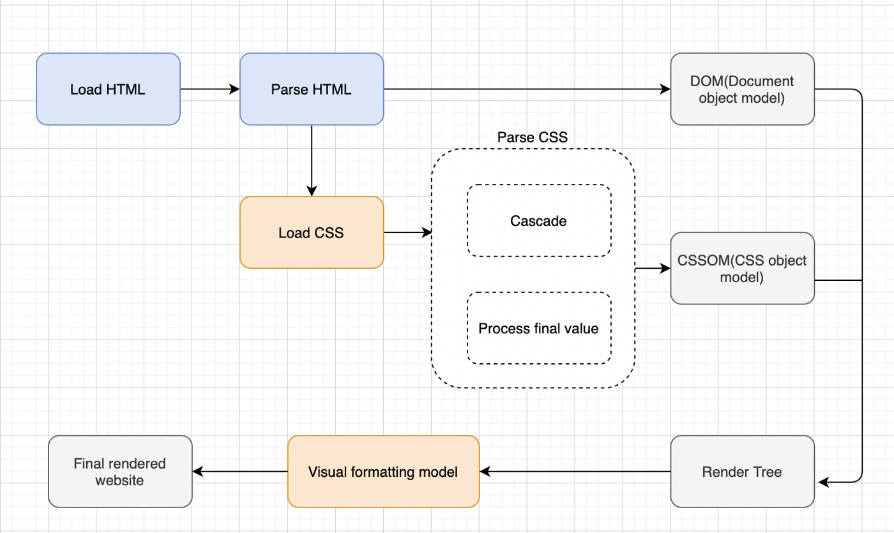
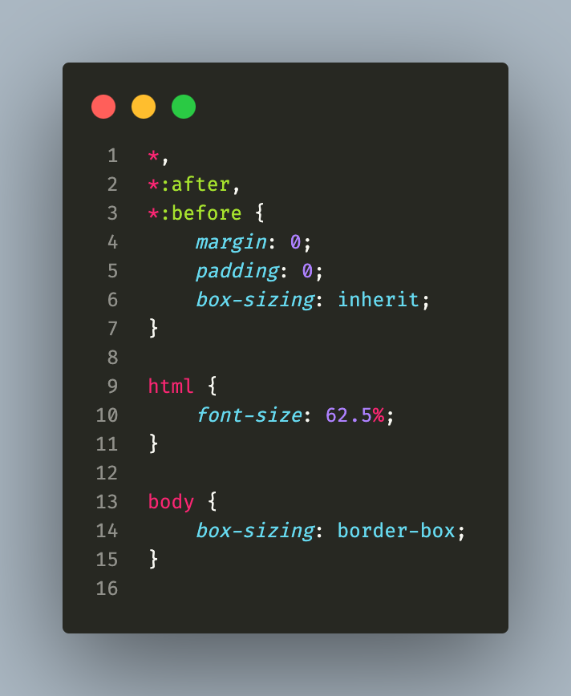

CSS
A look behind the scenes

Today topics
- Three pillars to write good HTML and CSS
- How CSS works behind the scenes
- How CSS is parsed: The cascade and specificity
- How CSS is parsed: Value processing
- How CSS is parsed: Inheritance
- Converting px to rem
Three pillars to write good HTML and CSS
Three pillars to write good HTML and CSS
Responsive design
Maintainable and scalable code
Web performance
- Fluid layout
- Media queries
- Responsive images
- Correct units
- Desktop-first vs mobile-first
- Clean
- Easy to understand
- Growth
- Reusable
- How to organize files
- How to name classes
- How to structure HTML
- Less HTTP requests
- Less code
- Compress code
- Use a CSS preprocessor*
- Less images
- Compress images
How CSS is parsed: The cascade and specificity
CSS rule

Cascade
Process of combining different stylesheets and resolving conflicts between different CSS rules and declarations, when more than one rule applies to a certain element
Parse CSS and HTML

1
(0,0,1,0)
2
(0,1,2,2)
3
(0,0,0,1)
4
(0,1,2,1)
Cascade and specificity: What you need to know
- CSS declarations marked with !important have the highest priority
- But only use !important as a last resource it's better to use correct specificities - more maintainable code
- Inline styles will always have priority over styles in external resources
- A selector that contain 1 ID is more specific than one with 1000 classes
- A selector that contain 1 class is more specific than one with 1000 elements
- The universal selector * has no specificity value (0,0,0,0)
- Rely more on specificity than on the order of selectors
- But rely on order when using 3rd-party stylesheet - always put your author stylesheet last.
How CSS is parsed: Value processing
Value processing: What you need to know
- Each property has an initial value, used if nothing is declared
- Browsers specify a root font-size for each page (usually 16px)
- Percentages and relative values are always converted to pixels
- Percentages are measured relative to their parent's font -size, if used to specify font-size
- em are measured relative to their parent font-size, if used to specify font-size
- em are measured relative to the current font-size, if used to specify lengths
- rem are always measured relative to the document's root font-size
- vh and vw are simply percentage measurements of the viewport's height and width
- em are measured relative to the current font-size, if used to specify lengths
Inheritance in CSS
Inheritance: What you need to know
- Properties related to text are inherited: font- family, font-size, color, etc;
- The computed value of a property is what gets inherited, not the declared value.
- Inheritance of a property only works if no one declares a value for that property;
- The inherit keyword forces inheritance on a certain property;
- The initial keyword resets a property to its initial value.
Converting px to rem

This will give you the same result, and make it easier to change the box-sizing in plugins or other components that leverage other behavior.